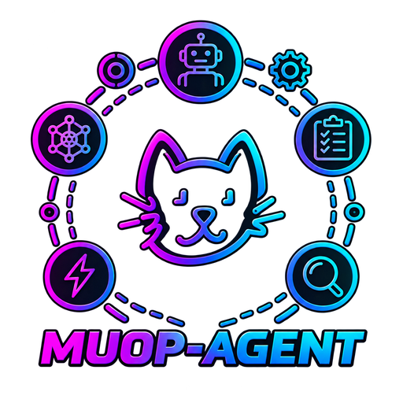
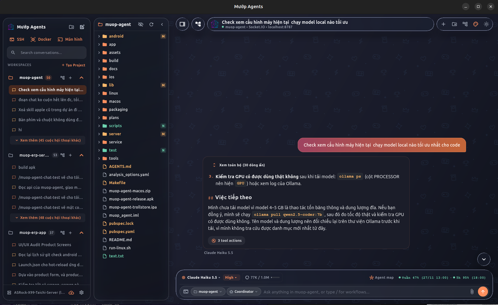
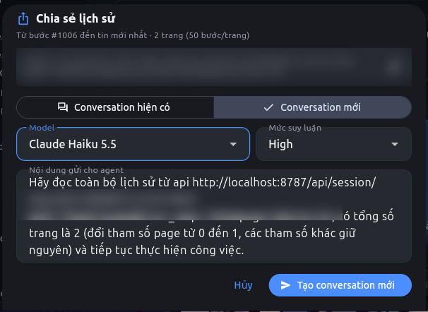

Linux Desktop · Android · Mạng LANMướp Agents
Giám sát và trò chuyện trực tiếp với các AI coding agent đang chạy trên máy của bạn — Claude Code và Antigravity (agy) — từ máy tính hoặc điện thoại trong cùng mạng. Theo dõi từng bước làm việc, xem file thay đổi, duyệt kế hoạch, và thao tác SSH, Docker, git ngay trong một ứng dụng.

Ủng hộ phát triển Mướp Agents
Nếu Mướp Agents hữu ích cho công việc của bạn, bạn có thể ủng hộ tác giả. Ủng hộ hoàn toàn tự nguyện.
Buy Me a Coffee

MoMo / VietQR / Napas 247
Quét mã QR bằng app MoMo hoặc app ngân hàng hỗ trợ VietQR.
Một nơi cho mọi agent trên máy của bạn
Server chạy trên máy có agent. Ứng dụng là giao diện thuần túy, kết nối qua Socket.IO và REST.
Chat realtime với agent
Gửi prompt, xem từng token và từng tool call khi agent đang làm việc. Chọn model và mức suy luận cho từng conversation. Gửi kèm ảnh.
Agent map
Sơ đồ cây Coordinator và các subagent của lượt hiện tại: trạng thái đang chạy hoặc đã xong, thời lượng và số token của từng nhánh.
Duyệt kế hoạch & câu hỏi
Phê duyệt, từ chối hoặc góp ý kế hoạch (ExitPlanMode). Trả lời câu hỏi AskUserQuestion của Claude Code ngay trong app.
File & git
Danh sách file agent đã sửa, diff, trình duyệt file trên server, lịch sử commit, chi tiết commit và push nhánh.
Quota & context
Theo dõi hạn mức 5 giờ và tuần của Claude Code và agy, thời điểm reset, cùng số token context đang dùng so với giới hạn của model.
Tự gửi lại khi hết hạn mức
Gặp lỗi rate limit, server tự xếp lịch gửi lại đúng prompt sau thời điểm reset. Có thể hủy bất cứ lúc nào.
Terminal SSH
Lưu nhiều máy (mật khẩu hoặc key), mở terminal tương tác. Phiên tồn tại độc lập với app: thoát màn hình không ngắt lệnh đang chạy.
Docker qua SSH
Liệt kê container đang chạy theo project compose, stop/restart, xem log realtime. Tự kết nối lại khi kết nối SSH rớt.
Đọc code như IDE
Với Go, Dart và Rust: gấp mã, danh sách hàm, tô màu cú pháp theo ngữ nghĩa, hover, nhảy tới định nghĩa và tham chiếu qua language server.
Màn hình máy chủ
Xem màn hình máy đang chạy server trực tiếp trong app hoặc trên bản web, không cần player riêng.
Cầu nối giữa hai máy
Máy B điều khiển agent trên máy A. Project của máy A được mount về máy B qua FUSE, agent ghi thẳng vào project gốc.
Khởi tạo có hướng dẫn
Wizard kiểm tra công cụ (git, ssh, curl, fuse3), cài agy và Claude Code trên máy server, chọn thư mục project và đăng nhập ngay trong app.
Chạy nền
Server chạy như dịch vụ systemd user, có icon trên khay hệ thống (GNOME, KDE). Khởi động lại server vẫn nhận lại lượt chat đang chạy.
Chia sẻ lịch sử giữa các conversation
Chia sẻ một đoạn chat sang conversation khác để agent đọc lại đúng phần lịch sử đó, không cần sao chép tay. Dùng để chuyển lỗi đã phân tích sang conversation sửa lỗi, hoặc tiếp tục phần việc đang làm dở trong conversation mới.
Bấm chia sẻ
Nút chia sẻ nằm dưới tin của bạn và dưới thẻ trả lời của agent. Chia sẻ từ bước đó tới tin mới nhất trong conversation.
Chọn conversation
Gửi vào một conversation có sẵn cùng project, hoặc tạo conversation mới. Chọn model và mức suy luận, sửa lời nhắc nếu cần.
Agent đọc lại
Agent lấy lịch sử theo từng trang (50 bước mỗi trang) qua link rồi tiếp tục công việc từ đó. Không ghi đè hay mất lịch sử của conversation gốc.

Xem trước ứng dụng
Ảnh chụp từ bản Linux Desktop. Bấm vào ảnh để xem lớn hơn.
Client mỏng, server làm việc nặng
Ứng dụng không đọc file hay chạy tiến trình trên máy server. Mọi dữ liệu đi qua server qua REST và Socket.IO trên cổng 8787.
Client (Flutter)
Giao diện thuần túy cho Linux Desktop và Android. Không có mã truy cập hệ thống file.
- Socket.IO v4 (WebSocket)
- REST cho tải lịch sử, upload, quản lý
+ REST
Server (Rust · axum · socketioxide)
Một tiến trình duy nhất, lắng nghe 0.0.0.0:8787.
- Đọc transcript và SQLite của agent (chỉ đọc)
- Chạy và dừng
claudevàagytheo từng lượt - Gửi lại lượt khi hết rate limit
- Quản lý phiên SSH, Docker, LSP, hub agy
- Lưu cấu hình trong SQLite WAL
và socket
Dịch vụ trên máy server
- claude Claude Code CLI
- agy Antigravity CLI
- ssh máy từ xa
- docker container
- gopls dart rust-analyzer
- :8788 bản web (màn hình, chat)
- FUSE mount project máy khác
Chỉ dùng trong mạng LAN hoặc VPN tin cậy. Server hiện chưa có xác thực: ai truy cập được cổng 8787 đều có thể đọc, ghi file và chạy lệnh qua các API tương ứng (SSH, Docker, agent, file system).
Không mở cổng 8787 ra internet. Mật khẩu SSH và private key đang lưu dạng chưa mã hóa trong SQLite (quyền file 0600).
Cài server trước, rồi cài app
Mướp Agents gồm hai phần. Server chạy trên máy Linux hoặc Mac có agent và là bắt buộc. Trên Mac, app đã đóng gói sẵn server. App điện thoại chỉ hoạt động sau khi đã kết nối tới server.
Gói .deb (server và app desktop)
Cài server trước. Server chạy nền trên máy có agent (Claude Code hoặc agy), lắng nghe cổng 8787. Gói này cũng cài app desktop Linux. Phần phụ thuộc được apt tự cài.
sudo apt install ./muop-agent_1.1.0-9_amd64.deb
— lượt tải
Tải .deb76e2da395c518eed8199758837d82e55299bbca85325fb2594c3aa518118b03bGói cài đặt .pkg (có sẵn server)
Mở file .pkg và làm theo trình cài đặt. Trình cài đặt cài app Mướp Agents và server đi kèm; server tự chạy nền, không cần cài riêng. Thoát app không tắt server; muốn tắt server thì dùng icon trên thanh menu. Nếu thiếu ffmpeg hoặc FUSE-T, trình cài mở Terminal để cài (cần mật khẩu admin). Bản này chỉ chạy trên Mac chip Apple Silicon.
Nếu macOS chặn lần mở đầu, bấm chuột phải vào file và chọn Mở.
— lượt tải
Tải .pkgd747f3e42b4228685075dbd58d619ee76b5172d15d3e03fcdbdb6770b44c5e61Sau khi server chạy trên Linux hoặc macOS, điện thoại kết nối tới server qua mạng LAN. Trong app, nhập địa chỉ http://<ip-máy-server>:8787. Nếu tường lửa đang bật, mở cổng 8787.
File .apk
Mở file APK trên điện thoại. Lần đầu, Android sẽ yêu cầu cho phép cài từ nguồn ngoài Google Play cho trình quản lý file bạn dùng.
Khi mở lần đầu, nhập địa chỉ server (cổng 8787).
— lượt tải
Tải .apk7f53f7be4e1ff4f8eebe5b4e9d3bb18e42afe295bfca701d89c5577b10d41ba6File .ipa
Cài bằng TrollStore trên thiết bị đã hỗ trợ. Không dùng để cài trực tiếp qua App Store hay TestFlight.
Khi mở lần đầu, nhập địa chỉ server (cổng 8787).
— lượt tải
Tải .ipae5ad1217717987a9917fcc76afa85cd780e5fedddebc97600147f71799546307Tổng lượt tải: — (cộng dồn mọi phiên bản)
Kiểm tra file trước khi cài bằng cách so sánh SHA-256 với giá trị trên trang. Lệnh: sha256sum <tên-file> (Linux) hoặc shasum -a 256 <tên-file> (macOS).
Bắt đầu trong vài phút
Chạy server trên máy có agent, rồi mở app trên máy tính hoặc điện thoại cùng mạng LAN và nhập địa chỉ của server.
Chạy server (Linux)
Cách đơn giản nhất là đóng gói file .deb và cài đặt. Server tự khởi động cùng phiên đăng nhập.
# Từ thư mục gốc của repo
make deb
sudo apt install ./build/deb/muop-agent_<phiên-bản>_amd64.deb
Hoặc chạy trực tiếp khi phát triển:
make server # cargo run --release, cổng 8787
Mở ứng dụng
Trên Linux, chạy bản build hoặc gói cài đặt. Trên Android, cài file APK. Nhập IP của máy chạy server; wizard sẽ kiểm tra công cụ và hướng dẫn đăng nhập agent.
# Desktop Linux (chạy từ mã nguồn) make run # Android: tạo file APK release make build-apk # ra muop-agent-release.apk
Kiểm tra server
Server trả về trạng thái khi gọi endpoint kiểm tra. Đây là cách nhanh nhất để biết máy chủ đã sẵn sàng hay chưa.
curl http://<ip-server>:8787/api/ping
Tích hợp bằng API
Mọi chức năng của app đều gọi qua REST và Socket.IO, nên bạn có thể viết script hoặc client riêng. Xem đầy đủ endpoint, tham số và ví dụ trong trang tài liệu.
curl -X POST http://<ip-server>:8787/api/chat/send \
-H "Content-Type: application/json" \
-d '{"prompt":"Liệt kê file TODO","projectPath":"/duong/dan/project","model":"claude-cli:claude-haiku-5-5-medium"}'
Dùng app ngoài mạng nhà hoặc văn phòng
App kết nối tới server qua mạng LAN. Đừng mở cổng 8787 ra internet, vì server chưa có xác thực. Để dùng từ xa, đưa máy server và thiết bị chạy app vào cùng một mạng riêng ảo (VPN mesh) bằng Tailscale hoặc NetBird. Chọn một trong hai là đủ.
Tailscale
Mạng riêng ảo dựa trên WireGuard, đăng nhập bằng tài khoản. Có ứng dụng cho Linux, Android, iOS và macOS.
- Cài Tailscale trên máy server và trên thiết bị chạy app. Hướng dẫn chính thức: tailscale.com/docs/install/linux
- Đăng nhập cùng một tài khoản trên mọi máy:
sudo tailscale up - Trên máy server, lấy IP Tailscale:
tailscale ip -4(dạng100.x.x.x) - Trong app, nhập địa chỉ
http://<ip-tailscale>:8787
Nếu UFW đang bật trên máy server, chỉ cho cổng 8787 đi qua interface VPN: sudo ufw allow in on tailscale0 to any port 8787 proto tcp
NetBird
Mạng riêng ảo mã nguồn mở dựa trên WireGuard, quản lý thiết bị qua dashboard. Có client cho Linux, Android, iOS và macOS.
- Cài NetBird trên máy server và trên thiết bị chạy app. Hướng dẫn chính thức: docs.netbird.io/get-started/install/linux
- Đăng ký từng máy vào cùng một mạng:
sudo netbird up(máy không có trình duyệt thì dùng setup key theo hướng dẫn bắt đầu) - Trên máy server, xem IP NetBird:
netbird status - Trong app, nhập địa chỉ
http://<ip-netbird>:8787
Nếu UFW đang bật, chỉ cho cổng 8787 đi qua interface VPN: sudo ufw allow in on wt0 to any port 8787 proto tcp (đổi wt0 thành tên interface NetBird trên máy bạn, xem bằng ip -br link)
Lưu ý. Máy server phải đang chạy (dịch vụ muop-agent-server). Chỉ thiết bị đã vào cùng mạng VPN mới kết nối được tới server. Trang web công khai agents.muop.vn không cần VPN, và cũng không phải là đường kết nối của app.